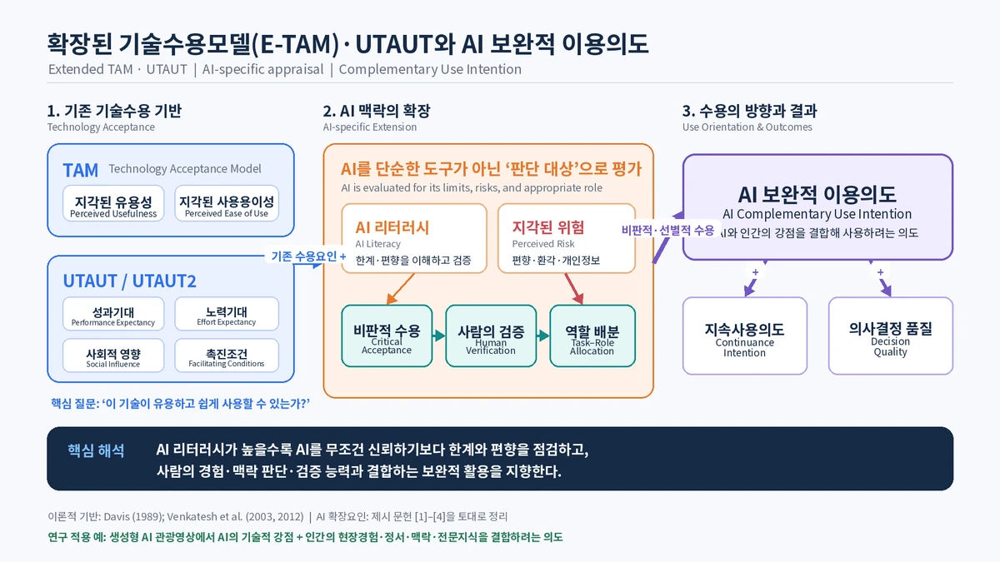

1교과목 개요
교과목명
스마트 투어리즘 (Smart Tourism)
학점 / 시수
3학점 · 주 2회 · 회당 75분 (주 150분)
운영 기간
15주 (총 30회차)
강의 방식
이론 강의 + 논문 리딩 + 영상 시청 + NotebookLM 기반 토론
선수 지식
별도 요구 없음. 통계·기술 배경이 없어도 수강 가능하도록 설계
2교과목 소개
본 교과목은 정보통신기술과 관광의 결합으로 등장한 스마트관광(Smart Tourism)을 국내 학술 연구를 통해 체계적으로 이해하는 것을 목표로 한다.
논문 기반 수업
특정 교재를 따르지 않고, 한국학술지인용색인(KCI)에 등재된 스마트관광 관련 학술논문 138편(2020–2026년 발표)을 직접 읽고 분석한다. 138편은 14개 대주제로 분류되어 25개 회차에 배분되며, 매회차 핵심 논문 약 3편을 심층적으로 다룬다.
결론이 아니라 연구 설계까지
논문의 결론만 전달하지 않고 그 결론이 도출된 연구 설계와 방법을 함께 다룬다. 학기 말에는 스마트관광 분야의 지형을 파악하고, 학술 논문을 비판적으로 읽으며 자신의 연구 주제를 설정하도록 한다.
3학습 목표
①스마트관광의 개념·구성요소·이론적 토대를 설명할 수 있다.
②기술수용이론(TAM·UTAUT2 등)을 비롯한 주요 이론 틀을 이해하고 사례에 적용할 수 있다.
③토픽모델링·구조방정식·AHP·CVM 등 스마트관광 연구에 쓰이는 주요 분석 방법의 목적과 한계를 구분할 수 있다.
④학술 논문의 초록과 연구 설계를 비판적으로 읽고, 결과의 신뢰성을 판단할 수 있다.
⑤스마트관광 분야의 연구 공백을 식별하고, 자신의 연구 주제와 방법론을 설계할 수 있다.
⑥스마트관광 관련 직무를 이해하고 자신의 진로 계획과 연결할 수 있다.
4평가 방법
| 평가 항목 | 비중 | 내용 |
|---|---|---|
| 중간고사 | 30% | 1~7주 핵심 논문 21편 — 개념 정의, 이론 모형, 스마트관광도시 정책 사례 |
| 기말고사 | 30% | 9~14주 핵심 논문 — XR, 생성형 AI, 경제적 가치평가, 산업별 적용, 지속가능성 |
| 연구계획서 | 25% | 학기말 제출. 연구 주제·선행연구·방법론·기대효과 (14주-2회 자료 활용) |
| 출석 및 참여 | 15% | 수업 중 토론 참여, 회차별 논문 사전 읽기 |
5강의 자료 및 운영 방식
주교재
별도 교재 없음. KCI 등재 학술논문 138편(2020–2026)을 회차별로 제공한다.
제공 자료
회차별 강의 PPT, 논문 목록 엑셀, 연구 공백·방법론 특강 자료를 제공한다.
75분 수업 운영 (표준)
10분
관련 영상 시청
서비스 시연·사례 영상·개념 애니메이션
서비스 시연·사례 영상·개념 애니메이션
25분
개념 강의
해당 회차의 이론·방법론 설명
해당 회차의 이론·방법론 설명
30분
핵심 논문 3편 소개
편당 10분 · 연구문제·변수·결과
편당 10분 · 연구문제·변수·결과
10분
정리 및 질의응답
NotebookLM 활용
회차 단위로 노트북을 분리해 핵심 논문과 참고 논문 PDF를 함께 업로드한다. 수업 중 “이 회차 논문들의 공통 변수는 무엇인가”와 같은 질문으로 즉석 비교가 가능하며, 학생은 과제 수행 시 동일한 노트북을 활용한다.
회차 단위로 노트북을 분리해 핵심 논문과 참고 논문 PDF를 함께 업로드한다. 수업 중 “이 회차 논문들의 공통 변수는 무엇인가”와 같은 질문으로 즉석 비교가 가능하며, 학생은 과제 수행 시 동일한 노트북을 활용한다.
6주차별 강의 계획
‘편수’는 해당 회차에 배정된 논문 수(핵심 3편 + 참고)를 의미합니다.
| 주차 | 회차 | 강의 주제 | 편수 |
|---|---|---|---|
| 1 | 1회 | 스마트관광의 개념·진화·이론적 토대 | 6 |
| 2회 | 연구동향 I: 문헌고찰·내용분석·국가별 비교 | 5 | |
| 2 | 1회 | 연구동향 II: 토픽모델링·텍스트 네트워크 | 5 |
| 2회 | 소셜 빅데이터와 스마트관광 인식 분석 | 6 | |
| 3 | 1회 | 스마트관광도시: 개념·계획기준·경쟁력 지표 | 5 |
| 2회 | 스마트관광도시: 성과 평가와 국내 사례 | 6 | |
| 4 | 1회 | 스마트관광 생태계와 산업구조 | 6 |
| 2회 | 정책·법제도·데이터 거버넌스와 AI 윤리 | 7 | |
| 5 | 1회 | 기술수용모델(TAM) 기초와 적용 | 5 |
| 2회 | 확장 TAM·기술준비수용모델(TRAM) | 6 | |
| 6 | 1회 | UTAUT2와 통합기술수용 접근 | 5 |
| 2회 | 혁신저항·후기수용모형(PAM)과 서비스 디자인 | 5 | |
| 7 | 1회 | 정보기술 속성 → 지각된 가치·만족·사용의도 | 6 |
| 2회 | 목적지 이미지·브랜드 경험·충성도 | 7 | |
| 8 | 1·2회 | ★ 중간고사 | — |
| 9 | 1회 | AR 콘텐츠와 사용자 경험(UX) | 5 |
| 2회 | MR·스마트글라스·메타버스와 가상관광 | 5 | |
| 10 | 1회 | 생성형 AI(ChatGPT·LLM)와 관광 서비스 | 5 |
| 2회 | 챗봇·추천시스템·IoT 지능형 인터페이스 | 7 | |
| 11 | 1회 | 경제적 파급효과: 산업연관분석·RAS 기법 | 4 |
| 2회 | 가치평가 방법론: CVM·선택실험법 | 4 | |
| 12 | 1회 | 산업별 적용 I: 숙박·외식·여행업·항공·의료 | 6 |
| 2회 | 산업별 적용 II: MICE·축제·이벤트·모빌리티 | 6 | |
| 13 | 1회 | 지역·현장 기반: 스마트 농어촌·해양 / 스마트관광과 기술 | 6 |
| 2회 | 지속가능한 스마트관광·오버투어리즘·문화유산 | 6 | |
| 14 | 1회 | 디지털 리터러시·교육·포용적 스마트관광 | 4 |
| 2회 | ★ 스마트투어리즘과 취업 (진로 특강) | — | |
| 15 | 1·2회 | ★ 기말고사 | — |
5 · 6주차 자료확장된 기술수용모델(E-TAM) · UTAUT와 AI 보완적 이용의도

총 운영 구조 · 논문 강의 25회차 · 시험 4회차 · 진로 특강 1회차 = 총 30회차 / 논문 138편 전량 배분
7대주제 구성 (14개 그룹)
A
스마트관광의 개념과 이론적 기반
6편 · 1주
B
스마트관광 연구동향
10편 · 1~2주
C
빅데이터 기반 관광분석
6편 · 2주
D
스마트관광도시
11편 · 3주
E
생태계·정책·거버넌스
13편 · 4주
F
기술수용이론
21편 · 5~6주
G
정보기술 속성과 관광객 반응
13편 · 7주
H
실감기술(XR)
10편 · 9주
I
인공지능과 스마트관광
12편 · 10주
J
경제적 가치와 성과 측정
8편 · 11주
K
산업별 적용
12편 · 12주
L
지역 기반 사례
6편 · 13주
M
지속가능성과 문화유산
6편 · 13주
N
역량·교육·포용
4편 · 14주
핵심 특징 · 기술수용이론(F)이 21편으로 138편 중 최대 군집이며, 피인용 상위 논문도 이 계열에 집중되어 있다. 국내 스마트관광 연구의 주류 프레임임을 5~6주차에서 명시적으로 다룬다.
8과제 및 학기말 연구계획서
회차별 사전 과제
각 회차의 핵심 논문 3편을 사전에 읽고, 초록에서 연구문제·방법·주요 결과를 확인한 뒤 수업에 참여한다. 참고 논문은 NotebookLM에 업로드된 자료로 보완한다.
학기말 연구계획서 25%
학기 전반에 걸쳐 함께 확인한 스마트관광 분야의 연구 공백 중 하나를 선택해 연구계획서를 작성한다.
구성
연구 주제 · 연구 필요성 · 선행연구 검토 · 연구 방법 · 기대효과
분량
A4 3~5매
주제 선정 지침
138편 전수 검색으로 확인된 연구 공백 중 선택 (예: 크루즈·복합리조트 산업, 농어촌 스마트관광, 무장애 스마트관광, ESG·탄소)
방법론 지침
강의 중 다룬 검증된 방법 활용 (척도개발, 델파이·AHP, Kano 모델, 선택실험법, 내용분석 등)
참고 자료
「연구 공백과 방법론」 특강 자료 · 138편 논문 목록 엑셀
9진로 연계 (14주-2회)
학기 중 다룬 주차와 스마트관광 관련 직무를 연결해 진로 설계를 지원한다.
| 직무 영역 | 연결 주차 | 요구 역량 |
|---|---|---|
| 스마트관광도시 사업단 · 지자체 관광정책 | 3~4주 | 정책·조례 이해, 성과지표 설계 |
| OTA · 관광 플랫폼 기획 / PM | 6~7주, 12주 | 기술수용 이해, UX, 서비스 기획 |
| DMO 디지털 마케팅 | 7주, 12주 | 목적지 브랜딩, 소셜 데이터 활용 |
| 관광 데이터 분석 · 리서치 | 2주, 10~11주 | 텍스트마이닝, 토픽모델링, 파급효과 분석 |
| XR · 실감콘텐츠 기획 | 9주 | AR/VR 기획, 사용성 평가 |
| MICE 테크 · 이벤트 | 12주 | 하이브리드 운영, 중요도-실행도 분석(IPA) |
수업 활동
1138편 저자키워드 워드클라우드 작성 → 산업이 요구하는 역량 키워드 도출
2관심 논문 1편 선택 → ‘논문 한 편으로 자기소개서 문단 쓰기’
3포트폴리오 1페이지 작성 — 관심 주제 · 활용 가능한 분석 도구 · 목표 직무
10수강 유의사항
① 논문 인용 시 등재 여부를 확인할 것
138편 중 4편은 학술대회 발표자료(비등재), 4편은 미등재, 7편은 등재후보다. 강의 자료의 APA 참고문헌에 [학술대회 발표]로 구분 표기했다.
138편 중 4편은 학술대회 발표자료(비등재), 4편은 미등재, 7편은 등재후보다. 강의 자료의 APA 참고문헌에 [학술대회 발표]로 구분 표기했다.
② 초록만 읽고 인용하지 말 것
일부 논문은 KCI 초록이 잘려 있거나 요인 나열이 중단되어 있다. 인용 시 원문 본문의 가설검정표를 확인해야 한다.
일부 논문은 KCI 초록이 잘려 있거나 요인 나열이 중단되어 있다. 인용 시 원문 본문의 가설검정표를 확인해야 한다.
③ 기각된 가설을 함께 볼 것
채택된 결과만 보지 말고 기각된 가설을 확인하는 훈련을 반복한다. 다음 연구 주제가 그 자리에서 나온다.
채택된 결과만 보지 말고 기각된 가설을 확인하는 훈련을 반복한다. 다음 연구 주제가 그 자리에서 나온다.